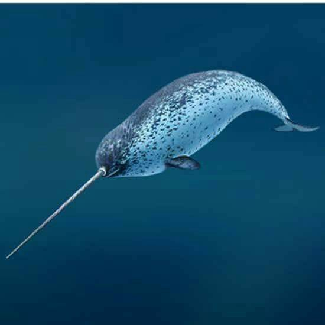

The polar bear is the largest meat-eating animal that lives on land in the world.
The Caribou, and their relative, the Reindeer both live in the Arctic.
Lemmings and Voles are the rats and mice of the Arctic. The lemmings live underground in the Summer.
The Narwhal lives only in the Arctic.
Less than half of the Arctic tundra has plants growing on it.
Back to the menu